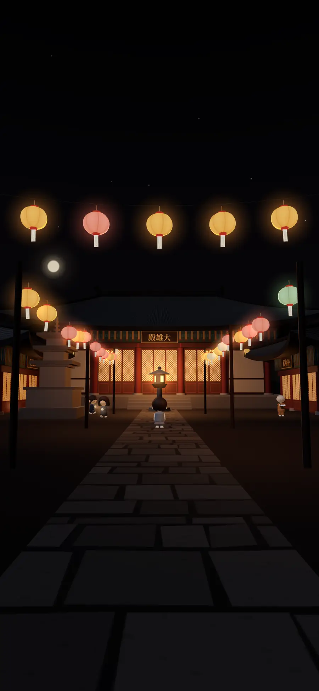
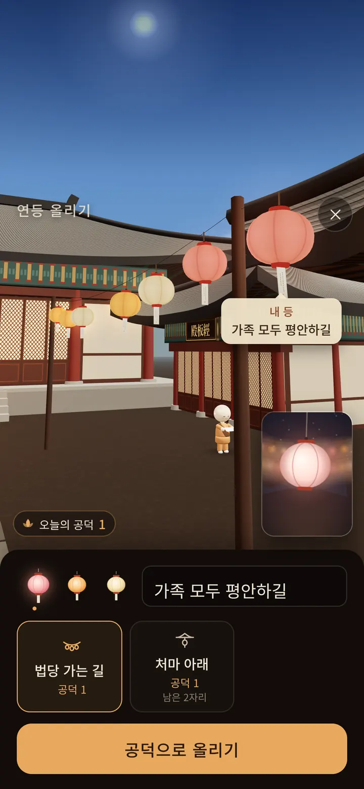

우리 어머니는 10년째
새벽 네 시에 기도하십니다.
촛불을 켜고, 소원을 적은 종이를 소리 내어 읽고, 경전까지 읽고 나면 오십 분이 지나 있습니다.
그런데 자식에게는 한 번도 말하지 않으셨습니다.
부담이 될까 봐서요.
기도하는 사람에게도 마음을 내려놓을 곳이 필요하다는 걸, 그때 알았습니다.
다라니를 만든 사람 드림
하루 5분,
마음이 편해지는
불교 수행
경전을 듣고, 마음을 털어놓고, 법당에 들어가 삼배를 올려요.
무료로 받을 수 있어요. App StoreGoogle Play에도 있어요.
우리 어머니는 10년째
새벽 네 시에 기도하십니다.
촛불을 켜고, 소원을 적은 종이를 소리 내어 읽고, 경전까지 읽고 나면 오십 분이 지나 있습니다.
그런데 자식에게는 한 번도 말하지 않으셨습니다.
부담이 될까 봐서요.
기도하는 사람에게도 마음을 내려놓을 곳이 필요하다는 걸, 그때 알았습니다.
다라니를 만든 사람 드림

마당을 걷고, 법당에 들어가 부처님께 절을 올려요. 바쁜 날에도 잠깐 들러 마음을 쉬어 가요.
흐린 글자 위를 손가락으로 따라 써요. 스물다섯 줄, 하루에 한 줄이어도 괜찮아요.
손으로 쓴 줄은 날짜별로 '나의 사경'에 모여요. 일기장처럼, 내 손글씨 그대로 이 폰에만 남아요.
목탁 소리에 맞춰 한 자씩 따라 읽는 독송도 있어요.
법구경, 반야심경, 금강경, 숫타니파타, 지장경을 한 편에 5분 안팎으로 풀어 들려드려요. 마음에 닿는 문장은 꾹 눌러 염주에 꿰어 둘 수 있어요.

잠 못 드는 새벽에도 털어놓을 수 있어요. 다라니 AI가 불교의 가르침을 참고해 답하고, 참고한 가르침을 함께 보여드려요.

경전 한 편을 끝까지 듣거나, 다라니와 이야기하거나, 절에서 수행한 날에는 달력에 연등이 켜져요. 잠깐 들르기만 한 날에는 연꽃이 피어요.

다라니의 답은 AI가 불교의 가르침을 참고해 만듭니다. 기도의 결과를 약속하지 않으며, 스님이나 전문 상담을 대신하지 않습니다.

올 한 해를 고요히 마무리해요
11월 20일부터 12월 31일까지 함께 기도해요. 참가 신청은 11월 18일부터 앱에서 받아요.
9,900원한 번 결제, 자동으로 다시 결제되지 않아요.
수행을 마친 날, 소원을 적은 등을 하나 올려요. 7일 동안 법당 가는 길을 밝혀요.
무료로 받을 수 있어요. App StoreGoogle Play에도 있어요.
유튜브에서 경전 이야기 듣기